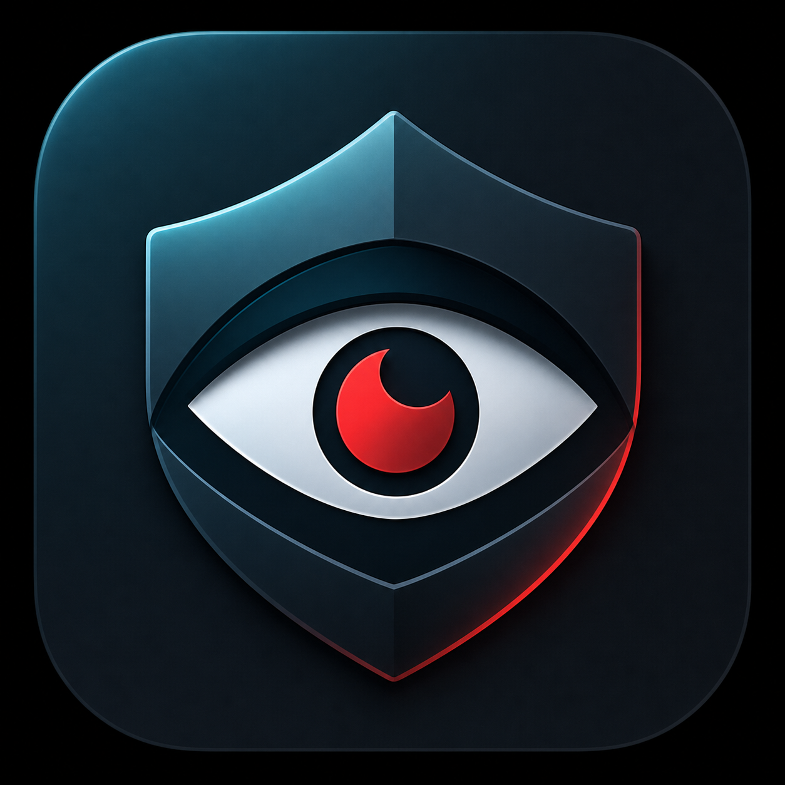

プレビュー非表示
カメラ映像を画面に出さず、顔の数だけをローカルで確認します。

Shoulder WatchMac menu bar privacy alert
カフェや出張先で、横から画面を見られているかもしれない。 そんな一瞬にだけ、画面端の赤いサインで知らせます。
macOS 12以降 / Apple Silicon向けテスト版
Quiet by default
カメラ映像を画面に出さず、顔の数だけをローカルで確認します。
しきい値を超えた時だけ、作業の邪魔になりにくい赤い枠で知らせます。
メニューバーから監視の開始、警告音、検出人数をすばやく変更できます。
Designed for public work
Privacy first
Shoulder WatchはApple Visionで顔の数を見ます。個人識別、視線推定、録画、ネットワーク送信は行いません。
広く配布する場合は、Developer ID署名とnotarizationを通した配布版にすると、macOSの警告を減らせます。